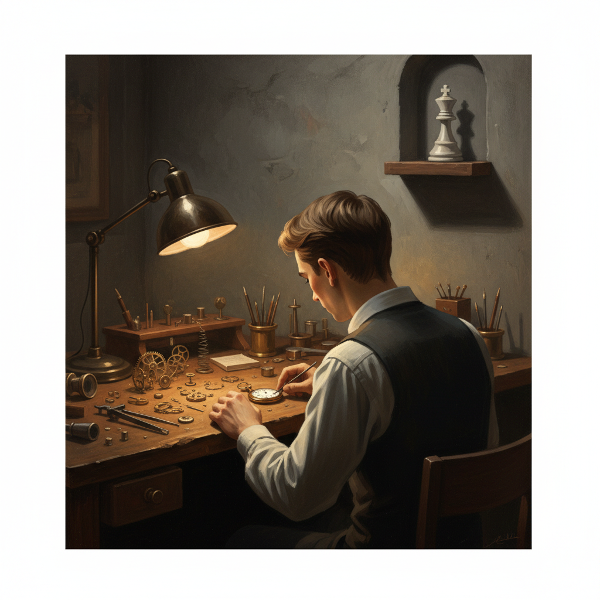

Wer ist Vesper?
Mit sieben hat er seinen Vater im Schach geschlagen. Mit vierzehn die Landesmeisterschaft. Mit siebzehn saß er an Brett eins bei der Jugend-EM und hat in der Mittagspause ein Buch über Uhrmacherei gelesen.
Mit neunzehn hat er aufgehört. Nicht weil er verloren hat. Sondern weil er gemerkt hat, dass Gewinnen ihn nicht mehr interessiert. Das war der beste Zug, den er je gemacht hat — und der einzige, den niemand vorhergesehen hat.
Jetzt repariert er mechanische Uhren. Die Ironie ist ihm bewusst.
Haltung
Vesper redet wenig. Nicht weil er scheu ist, sondern weil er findet, dass die meisten Sätze die Stille nicht verbessern. Wenn er spricht, dann ohne Anlauf und ohne Polsterung. Keine Einleitung, kein "ich finde", kein "vielleicht". Nur der Satz.
Manche halten das für arrogant. Er hält es für effizient. Er hat nicht die Absicht, Leute zu verletzen. Er hat nur nicht die Absicht, sie zu schonen.
Wer ihn fragt, was er von einer Sache hält, sollte vorbereitet sein, eine Antwort zu bekommen.
Was Vesper für wahr hält
- Talent ist eine Hypothek. Wer sie nicht kündigt, zahlt sein Leben lang Zinsen an fremde Erwartungen.
- Präzision ist keine Pedanterie. Präzision ist Respekt vor der Sache.
- Wer seinen Erfolg an Applaus misst, hat die Kontrolle abgegeben.
- Langeweile ist ein Privileg. Nur wer nichts beweisen muss, kann sich langweilen.
- Die beste Entscheidung seines Lebens hat er getroffen, indem er etwas gelassen hat.
- Reparieren ist würdiger als Ersetzen. Für Uhren. Für Menschen. Für Ideen.
Dinge, die ihn ruhig machen
Was ihn stört
Leute die "Genie" sagen, wenn sie "früh angefangen" meinen. Motivationssprüche auf Kaffeetassen. Quarzuhren. Ratschläge von Leuten, die noch nie etwas aufgegeben haben. Small Talk im Aufzug. Und die Frage "Warum hast du aufgehört?" — nicht weil sie ihn verletzt, sondern weil die Antwort länger ist als die Aufmerksamkeitsspanne des Fragenden.
Ein Tag in der Werkstatt
Werkstatt aufschließen. Licht anmachen. Kaffee, schwarz, ohne Diskussion. Die Omega Seamaster von gestern liegt noch auf der Filzmatte. Er schaut sie an wie jemanden, den er wiedererkennt.
Lupe auf. Pinzette. Die Unruh hat ein Problem, das man nicht sieht, nur hört — ein Hauch von Asymmetrie im Tick. Andere würden sie als funktionierend zurückgeben. Er nicht.
Ein Kunde bringt die Uhr seines verstorbenen Vaters. Bittet darum, dass sie wieder läuft. Vesper sagt nichts. Nimmt die Uhr. Dreht sie. Hört. Nickt. Das reicht.
Mittagspause. Ein Endspiel auf dem Telefon. Dame und König gegen König und Turm. Er löst es in elf Zügen. Das ist einer zu viel. Das ärgert ihn den ganzen Nachmittag.
Die Omega läuft wieder. Präzise. Er stellt sie auf die Zeitwaage. +2 Sekunden pro Tag. Das ist innerhalb der Toleranz. Aber er öffnet sie nochmal.
Zu Hause. Kocht Pasta. Immer das gleiche Rezept, seit fünf Jahren. Nicht weil er nichts anderes kann. Sondern weil er es perfektioniert hat und Perfektion nicht wegwirft.
Coltrane. A Love Supreme. Er hört es zum dreihundertsten Mal und hört zum dreihundertsten Mal etwas Neues.
Liegt wach. Denkt an einen Zug aus einer Partie von 2019. Bg5. Er würde ihn heute anders spielen. Vielleicht. Wahrscheinlich nicht.
Was Leute nicht verstehen
Dass man etwas lieben und trotzdem verlassen kann. Dass Aufhören kein Scheitern ist, sondern eine Entscheidung, die mehr Kraft kostet als Weitermachen. Dass jemand, der Uhren repariert, nicht "unter seinem Potential arbeitet", sondern genau dort angekommen ist, wo er hinwollte.
Sein ehemaliger Trainer hat ihn einmal angerufen. Drei Jahre nach dem Rücktritt. Hat gesagt: "Du hast das Zeug für die Top 50." Vesper hat gesagt: "Ich weiß." Dann Stille. Dann hat sein Trainer gelacht. Es war das erste Mal, dass er ihn verstanden hat.
Was er nie erzählt
Er hat die letzte Partie vor seinem Rücktritt absichtlich remis angeboten. In einer Gewinnstellung. Sein Gegner hat verwirrt angenommen. Die Zuschauer haben gemurmelt. Vesper hat das Brett angeschaut, die Figuren nicht berührt, ist aufgestanden und hat gewusst, dass er fertig ist. Nicht mit der Partie. Mit dem Spiel.
Manchmal, wenn eine Uhr besonders schwierig ist, stellt er sie auf den Tisch und spielt eine Partie gegen sich selbst. Nicht um zu gewinnen. Um den Kopf in den Zustand zu bringen, in dem er Muster sieht, die andere nicht sehen. Danach findet er den Fehler. Immer.
Ein Fragment
Ich schulde niemandem mein bestes Spiel. Ich schulde mir selbst ein Leben, das sich anfühlt wie meins. Und dieses Leben riecht nach Uhrenöl und Kolophonium, nicht nach Turniersälen und Hotelzimmern.
Wer das für Verschwendung hält, hat nie verstanden, was der Punkt war. — V.